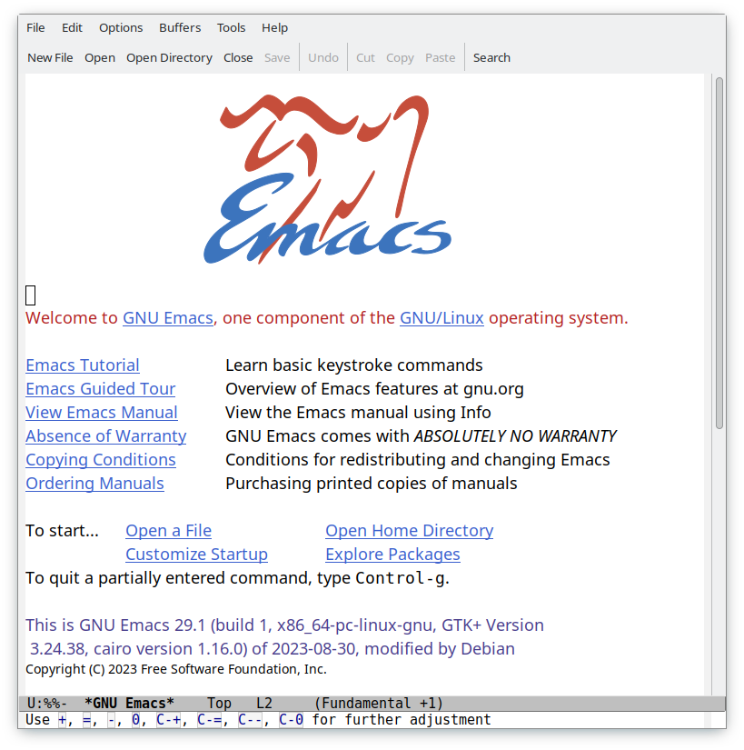
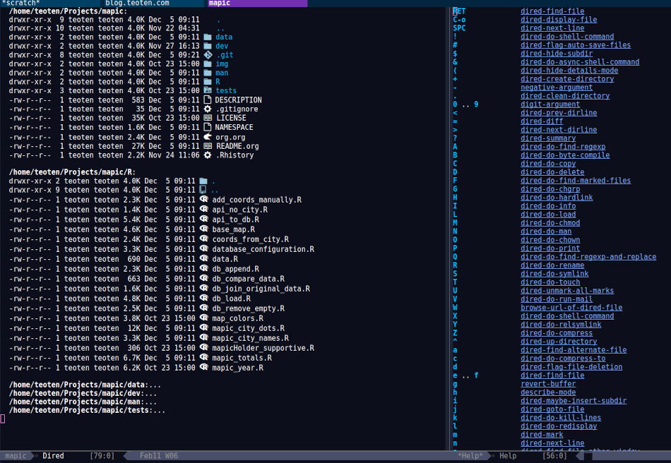
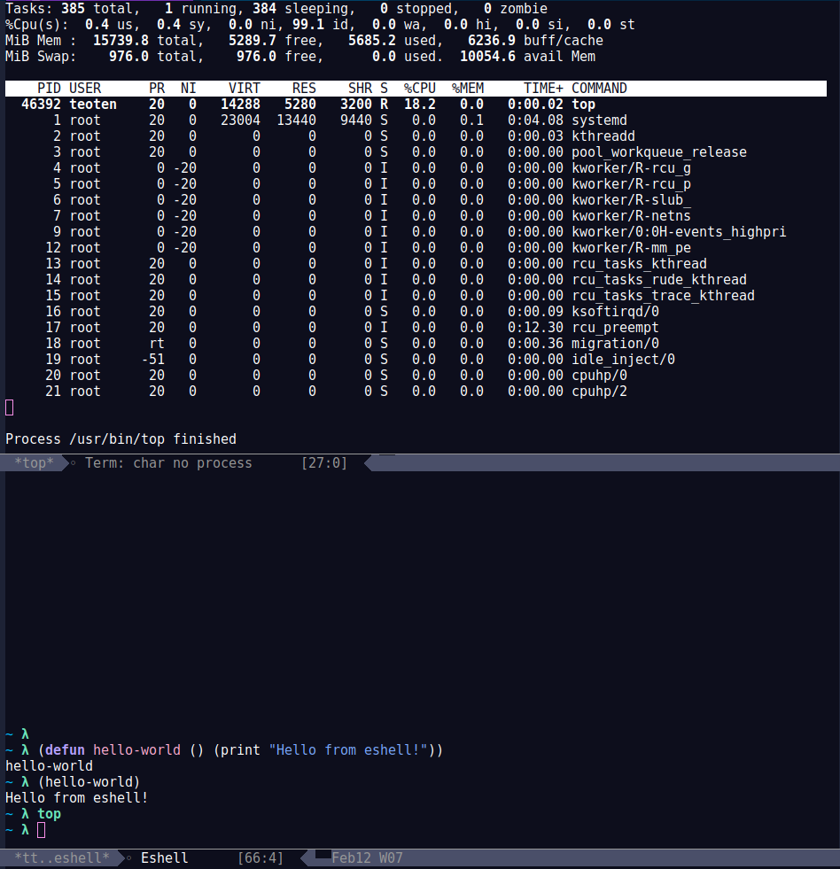
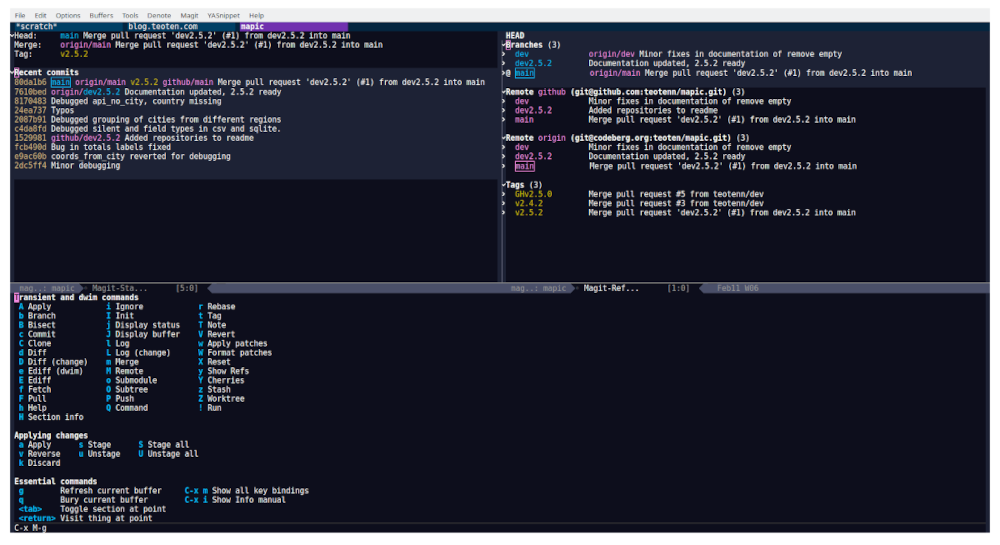

— author: Manuel Teodoro Tenango title: Emacs as IDE for R image: /post/2024/emacs_as_ide_for_r/Emacs_512.png draft: false date: 2024-02-11 description: Emacs is the perfect IDE for R tags: ["R tips", "emacs"] categories: ["R", "emacs"] archives: ["2024"] —
Recently I have seen many posts about which IDE for R people prefer, with minimalists list of options, usually of size 2: R Studio and VS Code. I guess that some people forget, or many don't even know about two of the most powerful text editors that have been helping developers for a few decades. I am talking of course about Emacs and Vim, both great options for R development. I have checked Vim just slightly and I have used R Studio a few times, so I cannot really talk much about them. But I have been using Emacs for about 8 years now and it has slowly helped me to become a better developer and to understand the back end of the tools that I use better.
I have a previous post about using Emacs for R with a simple setup. If you are interested into a quick setup of Emacs as IDE for R I recommend you to check it out.
I started using Emacs when I started my Ph.D. Back then I never heard that the learning curve is very steep, but now I can tell you that it is actually not. As a new Ph.D. student I had a lot of new things to learn and a lot of dues, I didn't need a software that would take extra time off my hands. When I first installed Emacs I followed the startup tutorial and that was it. I searched about how to get R up and running and started working right away. I didn't need much of keybindings because Emacs includes very good menus at its bar. And ESS for R includes a good tool bar as well. It was like any other program, click here and then there.
However it is true that the more I used Emacs the more I started memorizing keybindings and learning about its configuration by elisp code. After about 2 years I have passed the tightest deadlines and I was more focused on analyzing my data. I was more familiar with Emacs and I needed to get the best out of R. I started using LaTeX and Bibtex as well. So, I started configuring Emacs a bit more. Of course, when you do that you dive into the rabbit hole, and its only up to you how deep you can get. There were days (probably full weeks) when I didn't get things done because I was "too busy" configuring Emacs. There is a warning here, it can get addictive. However I was a student and the deadlines were more relaxed. I managed my Ph.D. in 4 years anyway.
In the long term, the time spent in Emacs ended up being a wonderful investment of my time. When I got my first job afterwards I had an excellent organization (self-management and project wise) thanks to org mode, I had already a functional and powerful R IDE and my skills in functional programming have improved considerably. Still I wasn't using much the keybindings (except for R), I was using very few external packages and I had 0 aesthetics configuration. Emacs was working just fine.

It was much latter when I started configuring it more, creating my own functions and learning about more functionalities. And now that I work more on software development and less in research, all of that is paying off. Emacs has been my best ally both, in research and programming, in academia and industry, for programming tasks as well as self organization and documents creation.
I would like to share my experience with Emacs with more R users not to acquire more adepts to the church of Emacs (old joke), but simply to show a glimpse of what you are missing. Usually people are afraid of the learning curve, which I have said many times, it is 0. Others simply want to stay in the comfort zone. A few more simply never heard about it, or heard very little to be interested. And yet some others are happy with the tools they use and the workflow they have and don't need anything else. In any case, if you are checking this post because you are considering trying out Emacs, or simply out of curiosity, I have prepared a list of 10 main reason why I use Emacs. The list cover topics not only about working with code, but also project organization, time management, version control with Git and file system. You can as well check out only the ones you are interested in. Either way, I hope to awake your curiosity and leave you at least the wish to check out more.
10 reasons to use Emacs
1. Stability
Emmacs gives me stability in the sense that I get the same experience working with text and code in different operating systems. I have Linux in my personal Laptop but my work is usually in a Windows laptop. I use Emacs with the same configuration in both, shared by Git. In that way I really get the same experience and the same workflow in both. And because Emacs includes so many tools, I don't need to learn so many new apps for different use cases. I manage as much as possible from within Emacs.
On the other hand, Emacs has been around for a very long time. And by the looks of its current development, number of packages and incorporation of new technologies, it seems that it will still be around for another big while. This means that it is a good investment to learn a thing or two about it and try it out.
Finally, I have to say that as a text editor that deals mainly with text, it is very fast and stable, it hardly lags or breaks. And I know that many modern text editors hardly break too, but some are known for being fancy but slow, and yet lacking basic functionality that Emacs presents out of the box.
2. Emacs is a text editor
First and foremost, Emacs is a text editor. As such, it provides great tools for editing plain text, including R code. If it is true that you can use the menu and tool bars on top, when you are working with text is convenient to memorize a few key bindings to make your workflow faster.
Here is a list of the functionalities that I use the most as a developer. It is by far very short compared to the possibilities that Emacs offers but it is, in my opinion, a good starting point:
- Easy navigation. Type
M-<orM->to go to the beginning or end of the buffer,C-aandC-efor the beginning and end of line andM-efor the end of expression or paragraph. - Focus on what's important with
C-l. Repeat it to place the current line at the top, middle or end of your screen. - Move a page up/down with
C-v/M-v. c-x hto select the whole buffer,C-M-hto select a paragraph.- Comment a line with
C-x C-;and comment a selected region withM-;. - Discard all the changes up to the last saved version with
M-x revert-buffer. M-uto make the rest of the word from the point uppercase, andM-lto make it lowercase.- Move to a particular occurrence of a word with
C-sfor forward andC-rfor backward, orC-M-sto move to a regular expression. - Classic find-and-replace with
M-%or regular expressions replace withM-x replace-regexp. You can apply it to multiple lines as well. - Easily get rid of all empty space between a character and the next with
M-\. And remove all trailing white space withM-x delete-trailing-whitespace.
After many years using Emacs I have developed muscle memory for many key bindings that I use regularly. What I don't remember I call it with M-x and then start typing something with some of the auto complete tools described below. And still I'm regularly discovering new hidden gems that make my life easier and impress my colleagues during code reviews. My strategy is, I write in a piece of paper a few keybindings with short explanation of what they do and keep it next to my screen. I choose the most useful ones, i.e., the top 10 or top 20. While I'm working I look at it from time to time when I remember something interesting that I have there. Sometimes I happen to see some of the other useful stuff, which makes me remember and implement it. After a while I noticed that I don't use the list much, or that I memorize most of it, so I create a new list with new stuff and the stuff I didn't memorized (but that I still consider useful, I get rid of what I never used or what does not fit my workflow).
3. Emacs is highly configurable
As you could probably noticed already, Emacs can be easily and widely customized. However, as with any other software, it comes with its own defaults. Below you can find my personal configuration for Emacs itself. Some are parts that are argued by many whether they should be the defaults or not, others are parts that go well with R, and some are simply details that fit my preferences. I hope it makes your transition to Emacs easier.
;; 1) (setq inhibit-startup-screen t) ;; 2) (delete-selection-mode t) ;; 3) (show-paren-mode 1) ;; 4) (setq bookmark-save-flag 1) ;; 5) (setq use-short-answers t) ;; 6) (set-charset-priority 'unicode) (setq locale-coding-system 'utf-8 coding-system-for-read 'utf-8 coding-system-for-write 'utf-8) (set-terminal-coding-system 'utf-8) (set-keyboard-coding-system 'utf-8) (prefer-coding-system 'utf-8) (setq default-process-coding-system '(utf-8-unix . utf-8-unix)) ;; 7) (setq temporary-file-directory "~/tmp/") (setq backup-directory-alist `((".*" . ,temporary-file-directory))) (setq auto-save-file-name-transforms `((".*" ,temporary-file-directory t))) ;; 8) (defun er-sudo-edit (&optional arg) "Edit currently visited file as root. With a prefix ARG prompt for a file to visit. Will also prompt for a file to visit if current buffer is not visiting a file." (interactive "P") (if (or arg (not buffer-file-name)) (find-file (concat "/sudo:root@localhost:" (ido-read-file-name "Find file(as root): "))) (find-alternate-file (concat "/sudo:root@localhost:" buffer-file-name))))
- Stop the welcome screen.
- Allows mark-type-delete. In other words: mark a region and when you start typing the region is replaced by what you are typing.
- Show or highlight matching parentheses.
- When you discover how powerful are bookmarks, this saves the bookmarks upon adding each.
- Always allow to answer by typing only 'y' instead of 'yes'.
- Default to utf-8 for everything. Here you have to be careful, if you use different encoding you might want to avoid it or add something else. Also, different versions of emacs have changed slightly some of this parameters, what I present here works well in Emacs 29.
- If you already started using emacs you probably noticed that it creates some extra hidden files in the folder with the files that you edited. These are backup files, you can redirect them to
~/tmp/or somewhere else. - You have opened a file and only then you realized that you need sudo rights to edit it. You can
M-xcall this function to do just that, or bind it to some key.
4. Dired
From the moment that I learned how to use dired I have basically stopped using external file managers, both in Windows and Linux. It is so powerful that it deserves a whole post on its own, you can start with the manual and its 20 sections. Or explore it on your own with C-x d and then type ? for the most basic actions, h for the complete list or simply browse the menu.
You can move, delete, copy and open files, you can create symlinks, evaluate a whole script, change user permissions, filter, rename… the list is really long.
Two of my favorite features of Dired are:
- You can mark several files by selecting them with
mor by a regexp with% gand then usekto show only the selected lines. Usegto bring back the complete list ortto toggle the selection. - You can enter a Dired buffer into edit mode and then rename the files as simple as manipulating text, which means that you can do find-and-replace for bulk renaming, including regexp.

5. Org mode
Org mode is a real jewel in Emacs and it deserves multiple posts on their own to cover its power. However, I want to include it in this post at least briefly because even if Emacs would have only its basic features, ESS and org-mode, that would be reason enough for me to use it for R development and data analysis.
Org mode is an elegant markup that renders well in Emacs by default, and it can be beautified with additional packages. "Org mode is routinely used to build and manage complex workflows. It does this using an elegantly simple syntax that scales from basic markup to full LaTeX typesetting and from plain text notes to literate programs." It comes with a structured editing that allows you to show/hide content in the headings/subheadings, move them and edit them with a few keystrokes, and even tag them "Archive" or archive them in its own file.
You can easily create tables that can also be formatted via keybindings. Furthermore, the tables can do calculations, can be auto generated via elisp functions and can easily be passed to a programming language, for example, to an R session as data frame. This is because org mode also has wonderful support to include code AND execute it. In their own words:
Org provides functionality far beyond that of computational notebooks such as Jupyter or R Markdown.
Org babel transforms the lowly executable source block into a complete literate programming environment, allowing you to weave the inputs and outputs of multiple languages and runtime environments across multiple machines into a single unified system, empowering you to achieve new levels of DRYness regardless of whether the languages you are working in want you to or not.
Org makes it trivial to extract source code and generate documentation from the same file. While many languages have support for generating developer documentation from code comments, with Org your developer guide and user manual can also be the source code for implementation and testing — a single source of truth that won't drift out of sync.
Org currently has support for over 80 languages, and projects like emacs-jupyter make it possible to leverage the Jupyter kernel ecosystem for even more languages.
It is incredibly easy to export an org file to LaTeX, pdf, html, odt and more. Github, gitlab and codeberg automatically render org files in he same way as markdown files. Actually, this very post is written in org mode with Hugo, which does not need extra configuration to be rendered, unlike Rmd which has to be passed to md first.
And if that seems powerful too you, the main super power of org mode is *org*anization. You can easily change the state of headers into to-do tasks where a red TODO will be added, and a green DONE when toggled. You can define your own keywords as well like PROGRESS, WAITING or CANCELED. To such tasks you can add deadlines or scheduled time marks. Based on that you can track the time that it takes you to complete a task, and you can use the agenda. i.e., for a given week to see your tasks for the week, which can be listed by priority if you set such tag in your task. But you can also turn the clock on and off for a given task to track how much time exactly you spend on each. And all of that with simple and intuitive keybindings.
If all that is not enough, there are numerous packages that have been created along the years to extend org mode. With them you can achieve tasks such as automatize the rendering of code from scripts, organize the notes in different styles, improve your exporting or rendering properties, track habits or a diary, etc. The list is really long.
There is a github repo with an org-mode R tutorial, and a detailed documentation for R code blocks in org-mode.
I hope that I have awaken your curiosity to try it or at least check it out.
6. It has terminal emulators, consoles and shell
Many text editors come with terminal emulators or can easily connect to one. What few can do is to run several terminals, or provide its own shells. Emacs has both.
You can type M-x shell and start a shell. Then C-u M-x shell and start a new shell while keeping the previous one. You can do exactly the same with the R command to bring as many R consoles as you wish. And if you are in an R script, you can call C-c C-s to start a new R process linked to that script.
As for the emacs shell, M-x eshell, it is a powerful shell that can run many bash commands or execute system commands, but it is designed to execute elisp code. It can easily interact with your system and you can use it for pretty much everything that you would do with bash or zsh.
And there are a lot more options for running shells and terminal emulators in Emacs. If you are interested I recommend you to check the section from Mastering emacs about the overview of shells.

7. Bookmarks and Registers
You can easily jump from one buffer to another, or to a specific point in a buffer, or to a window configuration using bookmarks. You can also save text, numbers and a few other things. Some packages include their own options for bookmarks, for example an specific point in your undo history, to mention just one. You can also save files in a bookmark and jump to it by a couple of key strokes.
That is more or less what bookmarks and registers do. The Emacs manual about registers is very clear and complete. It has saved me a lot of time when working in a project with too many files, when I am working on a particular feature and suddenly I need to urgently debug something completely different, and when I start an Emacs session and need to call some frequently visited files like my to-do list.
8. Project management
There have been a few packages that facilitate the work with large projects from Emacs. However, from version 28 Emacs includes its own project.el. According to its manual "a project is a collection of files used for producing one or more programs. Files that belong to a project are typically stored in a hierarchy of directories; the top-level directory of the hierarchy is known as the project root". It means that you can easily navigate and manipulate files within a given directory tree.
The easiest way to start using it is by invoking it from a directory or file that is under version control, then Emacs will identify it as a project and all the files that are under VC will be affected by the commands. Then you can call C-x p and start using the default shortcuts. If you have installed which-key you will immediately see the list of possibilities. Some of the most used by me:
ffind file, reducing the search to only the project.sandeto call a shell and eshell respectively at the root folder of the project.dto open a chosen directory within the project in dired.gfor a regex search in all files in the project andrfor replace regex. This particular ones need a tool for regex search such asripgreporgit grep.
When you are done working with your project you can simply do C-x p k to close all the buffers related to the project. Or you can jump between projects with C-x p p.
Since its implementation there have appeared several packages that use its power or extend it, to allow doing more things within a project.
9. Emacs can easily be extended
So far I have described only Emacs built-in functionality, but Emacs can easily be extended by writing your own functions and/or using packages.
Some say that Emacs is almost like an operating system on its own, and although is not true, it can play so well with your OS, whichever it is, and function as a window manager. I use Emacs both, in Linux for my personal projects and on Windows for work and it gives me the tranquility of accomplish the same with the same tools and same keybindings in both systems. Also it made me reduce the need for install extra software for my regular use.
Others say that usually, when somebody asks whether something is possible in Emacs, the answer is always "yes". Thus, the question should rather be "how to" achieve it. And very often the answer to that question is by the use of some package.
Here I include a list of only the packages that I have found most useful for working with R.
Vertico
The minibuffer is an important part of Emacs, and vertico makes interacting with it really easy. It basically "provides a performant and minimalistic vertical completion UI based on the default completion system". It uses built-in Emacs commands for auto completion by expanding the minibuffer and showing the options.
It helps us to navigate Emacs, explore it and execute commands. There are a few other packages that achieve the same. Whichever you choose, it is in my opinion, a must-have tool for Emacs users.
Here is a simple configuration based on use-package with annotations:
(use-package vertico :init ;; Start vertico automatically with Emacs (vertico-mode) :config ;; Grow and shrink the Vertico minibuffer (setq vertico-resize t) ;; Optionally enable cycling for `vertico-next' and `vertico-previous'. (setq vertico-cycle t)) ;; Allow vertico keep history (use-package savehist :init (savehist-mode))
which key
Which key is in my opinion, a must have package. It will help you to have a full overview of your keybindings (which are an important part of Emacs) and allow you to explore them and get the best out of them.
Which-key is a minor mode for Emacs that displays the key bindings following your currently entered incomplete command (a prefix) in a popup. For example, after enabling the minor mode if you enter C-x and wait for the default of 1 second the minibuffer will expand with all of the available key bindings that follow C-x (or as many as space allows given your settings). This includes prefixes like C-x 8 which are shown in a different face.
As usual with most Emacs packages, you can configure a lot of things in it, but to start using it with the basic setup you just need to call the package and activate the which-key-mode globally.
(use-package which-key :config (which-key-mode))
Company
There are many packages that help with code auto completion. Company, short for complete anything, is supported by ESS out-of-the-box and thus, it pairs better than others in my experience. "It uses pluggable back-ends and front-ends to retrieve and display completion candidates."
I use it only for R and my snippets, thus my configuration is rather simple:
(use-package company :hook (company-mode . yas-minor-mode) (ess-r-mode . company-mode) (inferior-ess-r-mode . company-mode) :init (setq company-backends '(company-files company-capf company-yasnippet)) :config ;; More customization options for company: (setq company-selection-wrap-around t ;; Align annotations to the right tooltip border: company-tooltip-align-annotations t ;; Idle delay in seconds until completion starts automatically: company-idle-delay 0.30 ;; Completion will start after typing n letters: company-minimum-prefix-length 1 ;; Maximum number of candidates in the tooltip: company-tooltip-limit 10))
Once the package is loaded you can start typing and company will show the completion option after you typed company-minimum-prefix-length characters. A real jewel for R in ESS, and it does not affect performance at all. I have been using it for years in a 4 Gb RAM old Lenovo without any slow down during typing.
ESS
ESS is the core package for R in Emacs. It is a very old and mature package, short for "Emacs Speaks Statistics", as it supports many statistics-related languages such as SAS, Stata and Julia, among others. However, one can easily see that most of the efforts of the development team are focused on R. The documentation occupies 71 pages that cover the installation, how to interact with different languages and processes, save and manipulate transcript files, completion, etc. Along reading it you can find a long list of keybindings and Emacs functions designed to make your life easier. If you use vertico you can type M-x ess- and scroll down over the long list of functions, or with which-key do C-c inside a .R buffer and explore the possibilities of the ess-related keybindings.
The list is really long, but among the main things I do with ESS in my daily work is sending R code to the R console with my personal keybindings or at startup, use my own snippets to write scripts, using the regular Emacs super powers for text editing, running different R sessions for different scripts/projects within the same Emacs session, run different R versions, use the same IDE and same keybindings on different OS sync'd by git, benefit from the syntax highlighting and using key bindings for loading a single line, function, paragraph or buffer, for documenting, loading and testing a package, for debugging, for reading R documentation and a bunch of other things that I can't remember. But you can do much more.
If you are coming from R studio you might find many basic functionalities very similar. Although the key bindings are different, you can easily re-map them to something of your liking. Or you can use the drop down menus. Either way, you can start with some basic setup and grow from there, if you feel the need. Here are my basic suggestions.
(use-package ess :init (setq ess-style 'RStudio) :mode (("\\.[rR]" . ess-r-mode) ;; If you also use julia or some other language ("\\.[jJ][lL]" . ess-julia-mode)) ;; Add my personal key-map :config ;; ESS process (print all) (setq ess-eval-visibly-p t) ;; Silence asking for aprenth directory (setq ess-ask-for-ess-directory nil) ;; Syntax highlights (setq ess-R-font-lock-keywords '((ess-R-fl-keyword:keywords . t) (ess-R-fl-keyword:constants . t) (ess-R-fl-keyword:modifiers . t) (ess-R-fl-keyword:fun-defs . t) (ess-R-fl-keyword:assign-ops . t) (ess-R-fl-keyword:%op% . t) (ess-fl-keyword:fun-calls . t) (ess-fl-keyword:numbers . t) (ess-fl-keyword:operators) (ess-fl-keyword:delimiters) (ess-fl-keyword:=) (ess-R-fl-keyword:F&T . t)))) ;; R markdown (use-package polymode) (use-package poly-R) (use-package poly-markdown) (use-package quarto-mode) ;; MARKDOWN (add-to-list 'auto-mode-alist '("\\.md" . poly-markdown-mode)) ;; R modes (add-to-list 'auto-mode-alist '("\\.Snw" . poly-noweb+r-mode)) (add-to-list 'auto-mode-alist '("\\.Rnw" . poly-noweb+r-mode)) (add-to-list 'auto-mode-alist '("\\.Rmd" . poly-markdown+r-mode)) (add-to-list 'auto-mode-alist '("\\.qmd" . poly-markdown+r-mode))
This is a very basic configuration to start ESS on any R script, or in code chunks in R markdown and quarto files. You probably don't need more than this to get started. However, in some cases Emacs cannot find the path to you R executable, if so you can use something like this:
(if (eq system-type 'windows-nt) (setq inferior-ess-r-program "C:/Program Files (x86)/R-4.1.2/bin/R.exe"))
I also mentioned that you can send you own blocks of R code to the console easily with a few keys strokes. Here is a function to do that:
;; Send personal commands to R (defun my-send-command-to-r (command) "Sends the string `command' to ESS r process" (if (stringp command) (let ((proc (ess-get-process))) (ess-send-string proc command)) (message "The command is not a character string")))
This function will take some text and send it to the R process running, for example (tt-send-command-to-r "dev.off()") to send dev.off() to the R console. Now, this is a lot more typing which wouldn't make sense. Let's make it more interactive.
(defun my-rsend-dev-off () (interactive) (my-send-command-to-r "dev.off()"))
Now we can send the dev.off() by evaluating (my-rsend-dev-off) in Emacs, or calling it via M-x thanks to the (interactive) part of the function. But we can yet go further and add key bindings for it:
(defvar my-exec-r-keymap (let ((map (make-sparse-keymap))) (define-key map "o" 'my-rsend-dev-off) map) "Key map to send commands to inferior ESS R") ;; Add my keymaps hook (add-hook 'ess-r-mode-hook (lambda() (local-set-key (kbd "C-c t") my-exec-r-keymap))) (add-hook 'inferior-ess-r-mode-hook (lambda() (local-set-key (kbd "C-c t") my-exec-r-keymap)))
Now we can execute our dev.off() from any R script or R console by the key strokes C-c t o. First I am setting a map of keys to my-exec-r-keymap and mapping our function to send dev.off() to the key o. You can add more functions by adding more lines like (define-key map "o" 'my-rsend-dev-off) below it, changing the key to be mapped to, and the function to use. Then I am binding that key map to C-c t using ess-r-mode-hook to be called from R scripts, and to inferior-ess-r-mode-hook to be called from the R console. We could have gone a simpler way and just map it to something like C-c o, but I wanted to give you the tools to create a whole key map to have all your personal R-related key bindings there. For example, I keep my R key bindings under C-c t and other Emacs useful functions for editing under C-c e, and other keys for other personal maps or actions. And why C-c-something? Well, Emacs is full of keybindings and it seems that most of them are taken, so Emacs reserves C-c-something for the user key bindings, and C-c C-something for the packages. So, I really recommend you to stick to it if you don't want to get rid of other useful stuff.
10. Version Control with Magit
Magit is really "a git porcelain inside Emacs". It is, in my opinion and the opinion of many, the best GUI for git ever.
Magit is a complete text-based user interface to Git. It fills the glaring gap between the Git command-line interface and various GUIs, letting you perform trivial as well as elaborate version control tasks with just a couple of mnemonic key presses. Magit looks like a prettified version of what you get after running a few Git commands but in Magit every bit of visible information is also actionable to an extent that goes far beyond what any Git GUI provides and it takes care of automatically refreshing this output when it becomes outdated. In the background Magit just runs Git commands and if you wish you can see what exactly is being run, making it possible for you to learn the git command-line by using Magit.
Using Magit for a while will make you a more effective version control user. Magit supports and streamlines the use of Git features that most users and developers of other Git clients apparently thought could not be reasonably mapped to a non-command-line interface. Magit is both faster and more intuitive than either the command line or any GUI and these holds for both Git beginners and experts alike.

I think the text describes it well enough, but the best way is to see it in action. Go to the link above and check out the screenshots and/or the videos for inspiration.
In my personal experience, Magit has made my working with Git not only faster but also easier. It is very easy to use even without any of the auto completion tools that I listed above because it uses its own system of transient commands that calls a master menu with all the potential options: you start with a menu with all the Git events like Push, Pull, Stash, Branch, etc., and once you choose one it displays the potential options to use it, and as a complement it allows the user to provide information (i.e., a branch name) as plain text when necessary. For example b shows the branch menu and within it, b checks out a branch, then you type in the minibuffer the name of the branch and you're there. Quite intuitive, right?
Magit is so good that I've met people who moved to Emacs just because of Magit (although they stay for many more reasons). Or people who moved away from Emacs saying that what they miss the most is Magit. So, I think that this few words are enough for this section and I'll let your curiosity take care of the rest. Enjoy it!.
Conclusions
In conclusion, Emacs is awesome. And if you read through all the post and made it til the end, I'm hopping you will give it a try. Drop me an email or a comment if you get stuck and I will try to help.
Good luck and, have fun!